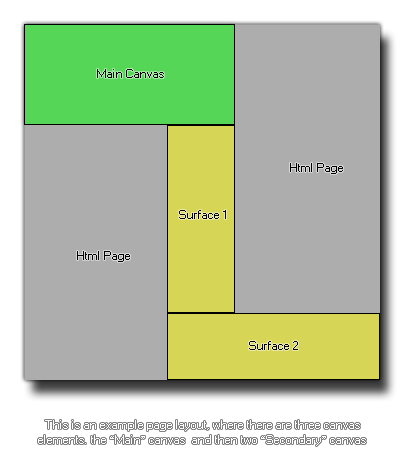

Syntaxe:
surface_create_ext(name, w, h);
Argument La description name Le nom de l'élément canvas pour lier la surface à. w La largeur de la surface à créer. h La hauteur de la surface à créer.
Résultats:
Real
La description
Cette fonction vous permet d'attacher une surface à un élément de canevas qui existe déjà dans votre page Web, ce qui signifie que vous pouvez diviser efficacement des parties de votre jeu pour les dessiner à différents endroits de la page. Pour ce faire, vous devez avoir correctement défini l'élément canvas dans le *.html page de votre jeu en utilisant les bonnes tailles et les noms qui correspondent aux surfaces que vous souhaitez créer. Ainsi, vous auriez votre canevas "principal", et ensuite vos canevas de surface secondaires, qui seront assignés en utilisant cette fonction aux surfaces correctes. L'image suivante est un exemple de configuration d'une page avec trois éléments de canevas: 
La mise en page peut être difficile, surtout si vous souhaitez que tous les éléments s'alignent correctement, mais une fois la tâche difficile de créer la mise en page terminée, vous pouvez ajouter cette html fichier en tant que fichier de page par défaut pour le jeu en utilisant l' onglet HTML5 des options de jeu. La prochaine chose que vous devez faire est de configurer votre salle et vos vues, car chaque surface devra être associée à une vue spécifique pour "capturer" les images du jeu (voir la variable de vue view_surface_id[0...7] ). L'image ci-dessous montre comment la salle de jeu pour l'exemple de toile ci-dessus serait définie:
Enfin, vous utiliserez cette fonction pour créer les surfaces, le nom étant le même que celui utilisé pour les éléments canvas et la taille correspondant à la taille de ce même canvas. La fonction retournera l'index de la surface qui devrait être stockée dans une variable pour les prochains appels de fonction. Lorsque la surface est créée pour la première fois, elle peut contenir du "bruit", car il s'agit simplement d'une zone de mémoire mise de côté (et cette mémoire peut contenir des informations). Vous pouvez donc nettoyer la surface avant de l'utiliser. une fonction comme draw_clear_alpha.
REMARQUE: Cette fonction est uniquement disponible pour une utilisation avec le module HTML5.

Exemple:
s1 = surface_create_ext("surface1", 192, 550);
s2 = surface_create_ext("surface2", 608, 186);
view_surface_id[1] = s1;
view_surface_id[2] = s2;
Le code ci-dessus crée deux surfaces de tailles différentes, en affectant chacune à un élément de canevas différent, puis ces surfaces sont affectées à deux vues afin que la partie correcte de la pièce soit capturée.